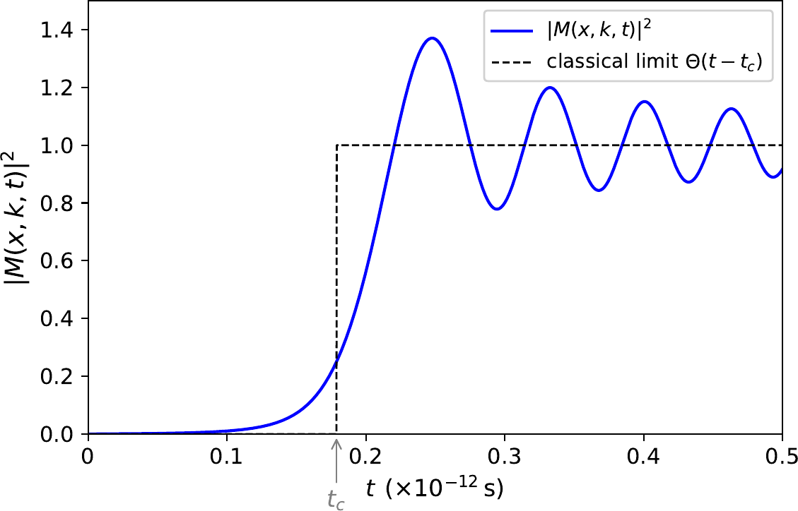
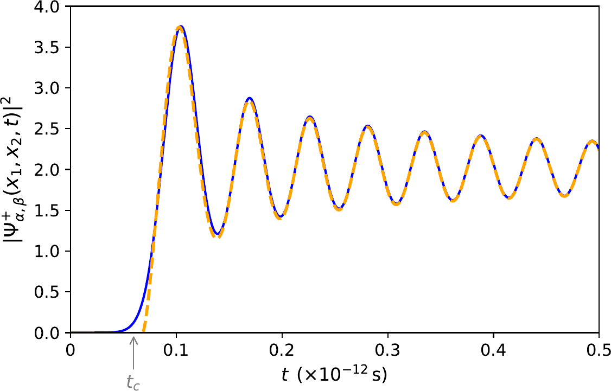
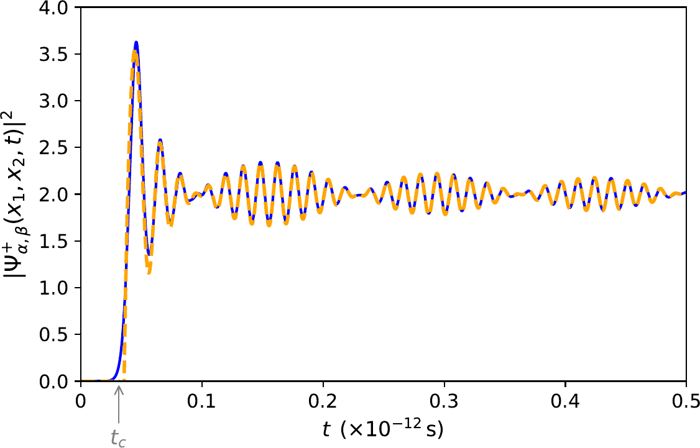
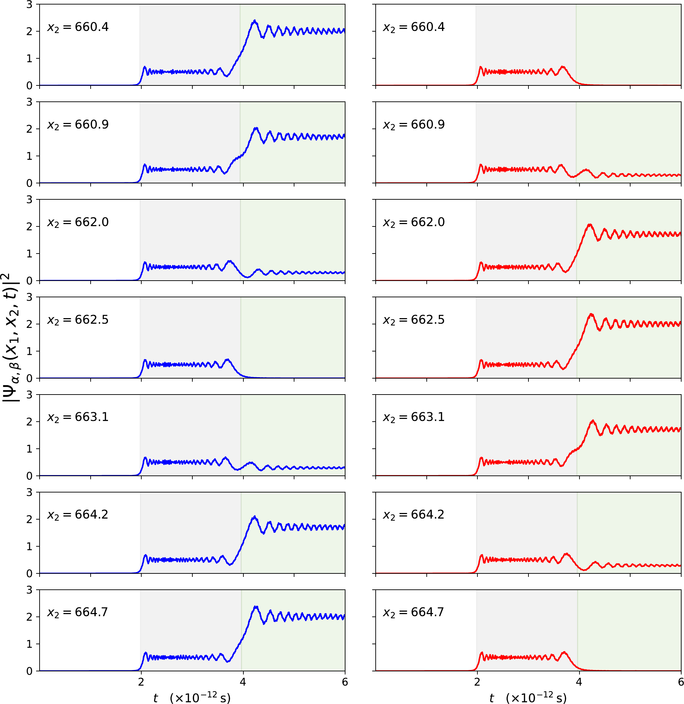
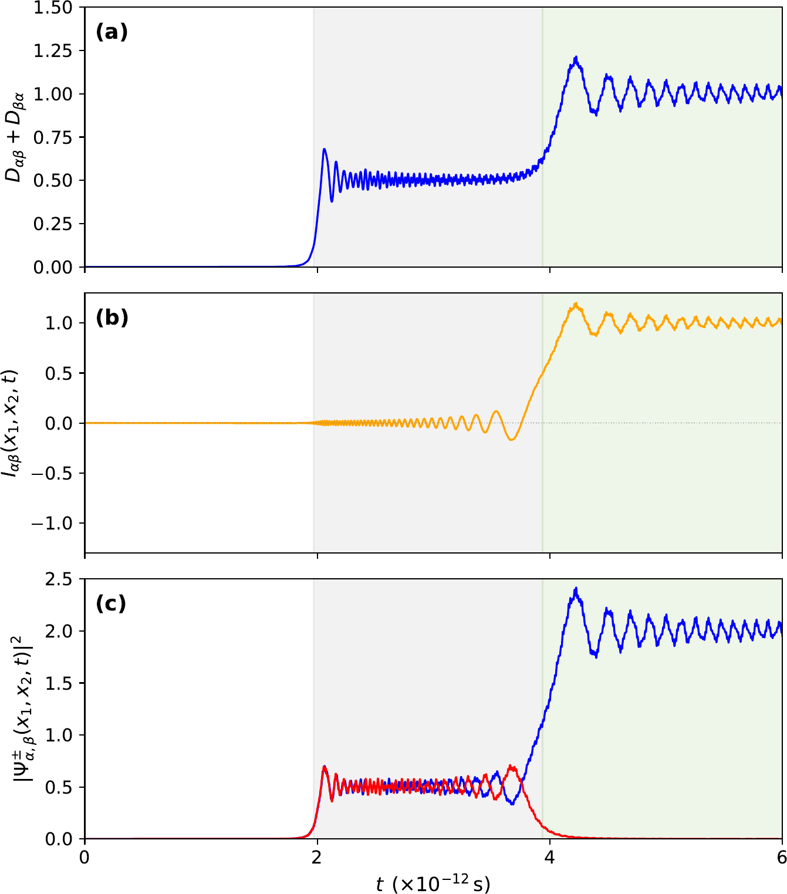
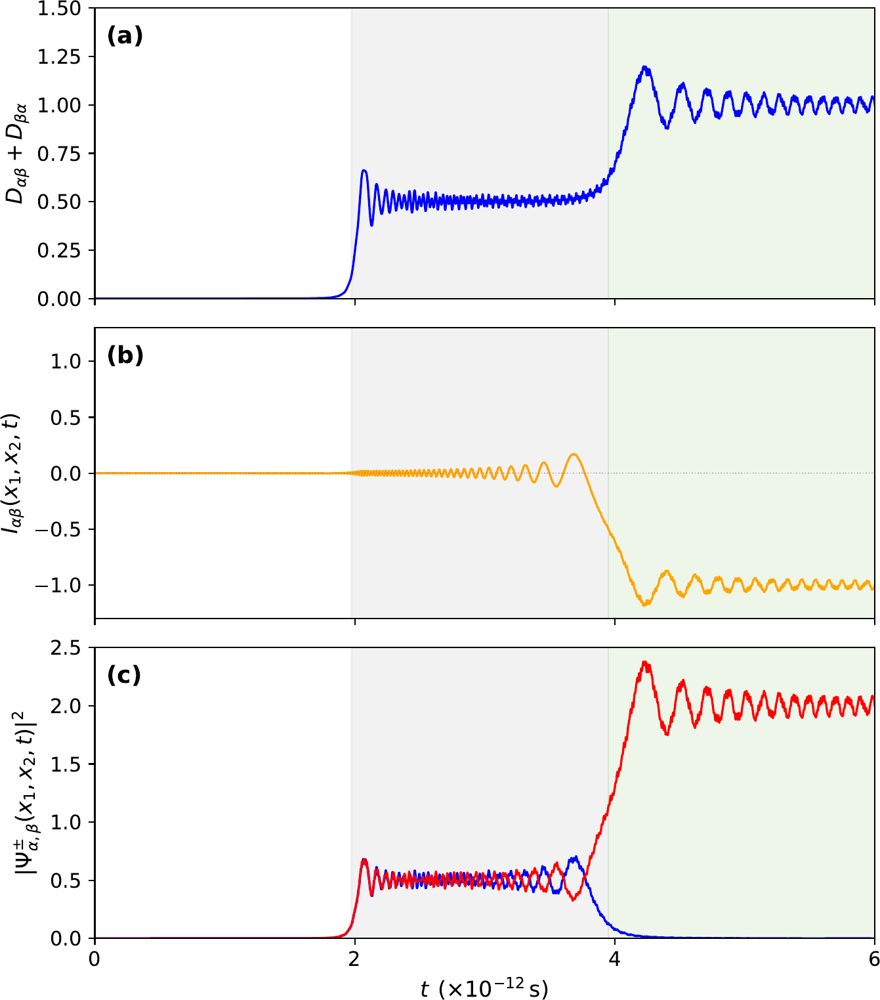
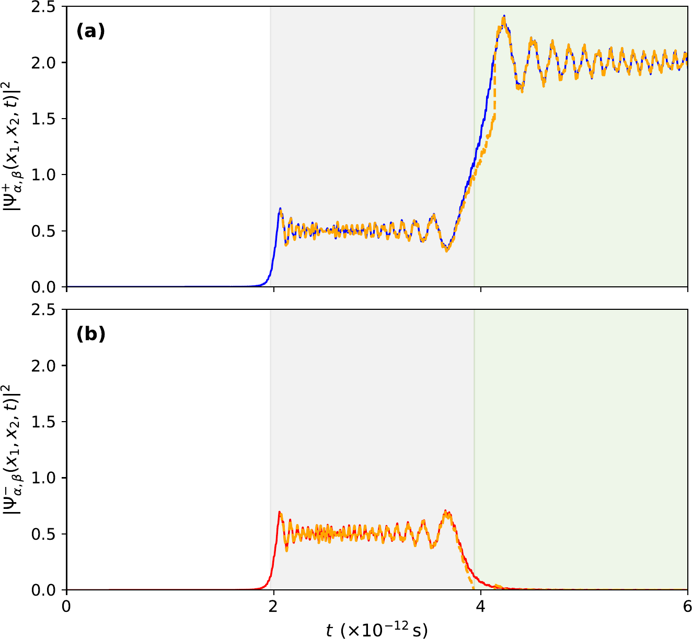

Resumen
Investigamos la dinámica transitoria de un estado de dos partículas que describe partículas copropagantes, dentro de una extensión analíticamente soluble del modelo del obturador cuántico de Moshinsky. La densidad de probabilidad conjunta dependiente del tiempo se analiza para tres configuraciones representativas de posiciones y números de onda. Para posiciones idénticas y números de onda iguales, los canales simétrico y antisimétrico exhiben interferencia de intercambio completamente constructiva y destructiva, respectivamente, mientras que la dinámica transitoria de difracción en el tiempo admite una representación compacta en términos de una función de Bessel de orden cero. Para posiciones coincidentes y números de onda ligeramente distintos, la dinámica transitoria desarrolla una estructura de batidos cuánticos, para la cual se obtienen expresiones analíticas tanto de la frecuencia de oscilación principal como de la envolvente del batido. Finalmente, para posiciones y números de onda diferentes, la densidad de probabilidad conjunta revela tres regímenes temporales: un intervalo inicial de probabilidad despreciable, una meseta intermedia de duración finita y un régimen de tiempos largos caracterizado por fluctuaciones pronunciadas. La estructura analítica de la solución pone de manifiesto dos contribuciones físicamente distintas a la dinámica: un término no exponencial asociado a la difracción en el tiempo y un término exponencial responsable de la estructura oscilatoria persistente que gobierna el comportamiento a tiempos largos.
1Introducción
Los transitorios cuánticos son fenómenos dinámicos temporales que surgen cuando los sistemas cuánticos evolucionan a partir de estados iniciales preparados de manera abrupta, o tras cambios súbitos en sus interacciones o condiciones de frontera, antes de aproximarse finalmente a su comportamiento de tiempos largos. Permiten acceder a efectos propiamente dinámicos que permanecen ocultos en las descripciones estacionarias, lo que los convierte en un tema fundamental dentro del estudio de la mecánica cuántica dependiente del tiempo.
El obturador cuántico de Moshinsky, introducido en 1952 [1], se ha convertido en un modelo paradigmático exactamente soluble para investigar transitorios cuánticos. En su forma más simple, el modelo describe la evolución libre de ondas planas truncadas tras retirar súbitamente un obturador absorbente, dando lugar al fenómeno emblemático de la difracción en el tiempo, la contraparte temporal de la difracción de Fresnel por un borde recto. Esta notable predicción se verificó experimentalmente décadas más tarde por Dalibard y colaboradores mediante átomos ultrafríos de cesio [2], lo que estableció al obturador cuántico como un marco fundamental para el estudio de la dinámica transitoria de ondas de materia.
Si bien el obturador cuántico ha sido ampliamente estudiado en el contexto de la dinámica de una sola partícula, muchos experimentos contemporáneos involucran la copropagación de partículas idénticas, donde la interferencia de intercambio desempeña un papel fundamental. Este tipo de configuraciones surge de forma natural en experimentos de tiempo de vuelo con átomos ultrafríos liberados de trampas ópticas o magnéticas. Los primeros experimentos de Yasuda et al. [3] y Schellekens et al. [4] demostraron el comportamiento de agrupamiento (bunching) de átomos bosónicos, mientras que Jeltes et al. [5] compararon directamente el agrupamiento bosónico y el antiagrupamiento fermiónico en condiciones experimentales esencialmente idénticas. Estos experimentos motivan la extensión de los estudios de transitorios del obturador cuántico más allá del marco de una sola partícula.
Esto plantea de inmediato la pregunta de cómo se modifica la dinámica transitoria del obturador cuántico cuando el modelo se extiende de una a dos partículas idénticas. En particular, importa determinar cómo afecta a esa dinámica la interferencia de intercambio, inherente a las partículas idénticas. El presente trabajo aborda este problema dentro de una extensión exactamente soluble del obturador cuántico de Moshinsky.
Con este fin, deducimos una solución analítica exacta de la ecuación de Schrödinger dependiente del tiempo correspondiente, la cual proporciona acceso directo a la densidad de probabilidad de detección conjunta dependiente del tiempo. El análisis se organiza en torno a tres configuraciones representativas de propagación, elegidas para revelar progresivamente las distintas manifestaciones de la interferencia de intercambio en la dinámica transitoria de ondas de materia.
El artículo está organizado como sigue. La sección 2 introduce la extensión a dos partículas del obturador cuántico de Moshinsky y deduce la solución analítica exacta, junto con la densidad de probabilidad de detección conjunta y su descomposición en contribuciones directas y de interferencia de intercambio. La sección 3 analiza la dinámica transitoria para las tres configuraciones de propagación consideradas. Finalmente, la sección 4 resume las conclusiones principales y discute sus implicaciones físicas.
2Soluciones analíticas
2.1El obturador cuántico simple
Un procedimiento eficaz para obtener soluciones analíticas de la ecuación de Schrödinger dependiente del tiempo ha sido el llamado modelo del obturador cuántico, introducido por Moshinsky en 1952 [1]. Moshinsky consideró una onda plana truncada incidente por la izquierda sobre un obturador, un dispositivo que, para \(t<0\), confina la función de onda incidente al semiespacio \(x\leq 0\). En \(t=0\) el obturador se abre súbitamente, permitiendo que la onda incidente evolucione a lo largo de la región \(x>0\) y exhiba el fenómeno emblemático de la difracción en el tiempo, verificado experimentalmente por Dalibard et al. [2]; véase también [6] para una revisión exhaustiva de los transitorios cuánticos. Este fenómeno es el análogo temporal de la difracción de Fresnel por un borde: a una distancia fija del obturador, la densidad de probabilidad oscila en el tiempo conforme el frente de onda la rebasa, y es el tiempo el que asume el papel que en el caso óptico corresponde a la coordenada espacial.
Un problema genérico de obturador cuántico consiste en resolver la ecuación de Schrödinger dependiente del tiempo,
para un estado inicial de la forma
donde \(\Theta\) denota la función escalón de Heaviside, de modo que la función de onda queda confinada a la región \(x\leq 0\) por el obturador. El hamiltoniano es
La solución formal de este problema puede expresarse en términos de una integral del propagador del sistema como
donde \(K(x,t|x',0)\) es el propagador cuántico de la ecuación de Schrödinger asociada al hamiltoniano (3), que lleva la función de onda desde su valor en la posición \(x'\) en el instante inicial \(t'=0\) hasta su valor en la posición \(x\) al tiempo \(t\). Se han obtenido soluciones analíticas para diversas elecciones tanto de la función \(\psi_{0}(x,k)\) como del potencial dispersor \(V(x)\). Evaluando la ecuación (4) para el caso especial de propagación libre (\(V(x)=0\)) de una onda plana truncada (\(\psi_{0}=e^{ikx}\)) se obtiene la solución analítica en forma cerrada
donde \(M\) es la función de Moshinsky, dada explícitamente por
El factor exponencial en la ecuación (6) describe la propagación libre de onda plana que resultaría de una función de onda inicial no restringida \(e^{ikx}\), mientras que la función error complementaria codifica la supresión impuesta por el obturador, interpolando entre \(|M|^{2}\approx 1\) muy por detrás del frente de onda clásico \(x_{\rm cl}(t) = (\hbar k/m)\,t\), y \(|M|^{2}\approx 0\) muy por delante de él. La transición entre estos dos regímenes, cerca del tiempo de llegada clásico \(t_{c}\equiv mx/(\hbar k)\), produce las oscilaciones temporales que definen el fenómeno de difracción en el tiempo, y la densidad de probabilidad \(|\psi(x,k,t)|^{2}=|M(x,k,t)|^{2}\) obtenida de la ecuación (5) exhibe explícitamente este comportamiento.
La figura 1 muestra la densidad de probabilidad de una partícula \(|M(x,k,t)|^{2}\) como función del tiempo en la posición fija \(x=30\) nm. La función de Moshinsky exacta se compara con el escalón clásico \(\Theta(t-t_{c})\), donde \(t_{c}=mx/(\hbar k)\) es el tiempo de llegada clásico del frente de onda a \(x\). La desviación entre ambas curvas hace explícito el fenómeno de difracción en el tiempo: en lugar de encenderse abruptamente en \(t_{c}\), la densidad de probabilidad cuántica desarrolla un ascenso suave, un sobrepaso y oscilaciones amortiguadas en torno al valor asintótico de onda plana \(|M|^{2}\to 1\).

2.2Obturador cuántico para un estado de dos partículas simetrizado por intercambio
Aquí nos ocupamos de la solución de la ecuación de Schrödinger dependiente del tiempo,
para un estado inicial de dos partículas simetrizado por intercambio de la forma
donde \(\psi_{n}(x_{j})\equiv \psi(x_{j},k_n,0)\), con \(n=\alpha,\beta\) y \(j = 1,2\). El producto \(\Theta(-x_1)\,\Theta(-x_2)\) confina el estado inicial de dos partículas al cuadrante \(x_1\leq 0,\ x_2\leq 0\), en el cual ambos subsistemas están bloqueados por el obturador. El factor \(1/\sqrt{2}\) es el prefactor de simetría convencional de la combinación (anti)simétrica de dos modos. El hamiltoniano \(H\) del sistema es la suma \(H = H_1 + H_2\), donde cada \(H_j\) es de la forma (3).
La solución dependiente del tiempo \(\Psi(x_{1}, x_{2}, t)\) de la ecuación (7), para el obturador cuántico de dos partículas (8), puede escribirse en términos del propagador del sistema como
Dado que las dos partículas no interactúan, el hamiltoniano es separable, \(H=H_1+H_2\), y el propagador de dos partículas se factoriza en un producto de propagadores de una partícula,
De aquí que la ecuación (9) pueda reescribirse como
Además, puesto que las partículas son idénticas, \(H\) es simétrico bajo permutación de los índices de partícula y por lo tanto conmuta con el operador de intercambio. Esto garantiza que la (anti)simetría del estado inicial (8) se preserva durante la evolución temporal.
La sustitución de (8) en (10) permite escribir la solución como
A partir de la expresión (4), la solución (11) puede reescribirse en términos de soluciones del obturador cuántico de una partícula como
donde \(\psi_n(x,t) \equiv \psi(x, k_n, t)\) (\(n=\alpha,\beta\)), cada una siendo solución de la ecuación de Schrödinger de una partícula (1). La función de onda de dos partículas \(\Psi(x_{1},x_{2},t)\) queda así expresada como una combinación (anti)simétrica de las funciones de onda de una partícula \(\psi_\alpha(x,t)\) y \(\psi_\beta(x,t)\).
Particularizamos ahora el formalismo al caso de ondas planas truncadas, eligiendo \(\psi_{\alpha}(x_{j}, 0)=e^{i \alpha x_{j}}\) y \(\psi_{\beta}(x_{j}, 0)=e^{i \beta x_{j}}\), donde, por simplicidad de notación, hacemos \(\alpha \equiv k_{\alpha}\) y \(\beta \equiv k_{\beta}\). Así, las energías de incidencia son \(E_{\alpha} = \hbar^2 \alpha^2/2m\) y \(E_{\beta} = \hbar^2 \beta^2/2m\). En ausencia de potenciales dispersores, estas ondas planas truncadas están confinadas a la región \(x\leq 0\) por un obturador colocado en \(x=0\). La apertura súbita del obturador en \(t=0\) permite la propagación libre de la onda cuántica de dos partículas a lo largo de la región \(x>0\). En este caso, los subsistemas tienen soluciones analíticas explícitas de la forma (5). Por lo tanto, la función de onda dependiente del tiempo del sistema de dos partículas es de la forma
donde el signo superior (inferior) corresponde al caso simétrico (antisimétrico) asociado a partículas bosónicas (fermiónicas).
Para números de onda de incidencia \(\alpha,\beta>0\), la densidad de probabilidad conjunta en la región transmitida \(x_1\geq 0,\ x_2\geq 0\), obtenida de la ecuación (13), es
Los dos primeros términos de la ecuación (14) son las contribuciones directas en las que la partícula 1 se detecta en el modo \(\alpha\) en \(x_1\) y la partícula 2 en el modo \(\beta\) en \(x_2\), y viceversa; el tercer término es la contribución de interferencia de intercambio, cuyo signo distingue la combinación simétrica (\(+\)) de la antisimétrica (\(-\)). En lo que sigue, \(|\Psi_{\alpha,\beta}^{\pm}(x_1,x_2,t)|^2\) se interpreta operacionalmente como una densidad de detección conjunta en las posiciones \((x_1,x_2)\), en la línea de los experimentos de conteo de coincidencias del tipo Hanbury Brown–Twiss [7,5]. El contenido físico del análisis que sigue reside en la estructura dependiente del tiempo y en el contraste relativo de las contribuciones simétrica (\(+\)) y antisimétrica (\(-\)) de la ecuación (14). Las condiciones iniciales de onda plana truncada del arreglo del obturador son idealizaciones propias de la teoría de dispersión, de modo que los observables relevantes son las tasas de detección y no la norma de la función de onda en sí misma.
Nota sobre la normalización. La normalización global de \(|\Psi_{\alpha,\beta}^{\pm}|^2\) no queda fijada por el estado inicial de onda plana truncada y no posee significado físico por sí misma; solo los cocientes son independientes del prefactor arbitrario. Las cantidades reportadas más adelante —en particular el contraste de detección coincidente \(|\Psi_{\alpha,\alpha}^{+}(x,x,t)|^2/|M(x,\alpha,t)|^4=2\) y la modulación a tiempos largos \(1\pm\cos(\Delta k\,\Delta x)\) alrededor del fondo de dos partículas— son invariantes bajo un reescalamiento \(\Psi_0\to\lambda\Psi_0\) y constituyen por lo tanto los observables bien definidos del modelo.
La ecuación (14) constituye el resultado analítico central del modelo y proporciona la base para el estudio sistemático de los efectos transitorios desarrollado en la siguiente sección. En lo que sigue analizaremos tres regímenes transitorios obtenidos al particularizar la ecuación (14) a: (i) detección en posiciones coincidentes con números de onda idénticos, \(x_1=x_2\) y \(\alpha=\beta\); (ii) detección coincidente con números de onda ligeramente desajustados, \(x_1=x_2\) y \(\alpha\approx\beta\); y (iii) detección espacialmente separada con números de onda distintos, \(x_1\ne x_2\) y \(\alpha\ne\beta\).
3Comportamiento transitorio de la solución de dos partículas
Investigamos la dinámica transitoria de la densidad de probabilidad de dos partículas a través de tres configuraciones representativas de propagación. El análisis comienza con la configuración simétrica más simple, continúa relajando una de sus condiciones definitorias y considera finalmente el caso completamente general en el que tanto las posiciones de detección como los números de onda incidentes pueden diferir.
3.1Difracción en el tiempo realzada: caso \(x_1=x_2\), \(\alpha=\beta\)
Con el fin de explorar los transitorios de dos partículas, comenzamos con el caso más simple, en el que tanto las posiciones como los números de onda son iguales. En estas condiciones, la densidad antisimétrica se anula exactamente, \(|\Psi_{\alpha,\alpha}^{-}(x,x,t)|^{2}=0\), de modo que el análisis siguiente se centra en la densidad simétrica. La figura 2 muestra la densidad de probabilidad \(|\Psi_{\alpha,\alpha}^{+}(x,x,t)|^{2}\) como función del tiempo para los valores de parámetros indicados. En el presente caso, la densidad de probabilidad de dos partículas se reduce al cuadrado de la densidad de probabilidad de una partícula, a saber,
Por lo tanto, hereda la estructura característica de difracción en el tiempo de la dinámica de una partícula. El factor 2 se origina en la suma constructiva de las dos amplitudes idénticas en la combinación simétrica de la ecuación (13) evaluada en detección coincidente. De manera equivalente, el término de interferencia de intercambio se vuelve idéntico a la contribución directa en lugar de anularse, de donde surge el factor 2 global. Este resultado concuerda con estudios previos de difracción de dos partículas e interferometría con redes de difracción, donde la probabilidad de detección conjunta en posiciones coincidentes es proporcional a la cuarta potencia del módulo de la función de onda de una partícula [8]. Aquí, la misma estructura surge en el dominio temporal dentro de la dinámica transitoria del obturador cuántico.

Para comprender el origen de la dinámica transitoria, analizamos ahora las contribuciones dominantes que subyacen a la solución exacta. La función de Moshinsky admite la expansión asintótica [9]
la cual es válida en el sector \(\pi/2<\arg(y)<3\pi/2\) del plano complejo \(y\), con
A partir de la definición (17), la condición \(\pi/2<\arg(y)<3\pi/2\) es equivalente a \(t>t_c\), donde \(t_c\) denota el tiempo de llegada clásico
Si se conserva la contribución exponencial junto con la corrección no exponencial dominante de orden \(1/\gamma\), y despreciando términos de orden \(1/\gamma^3\) y superiores, que se vuelven progresivamente más pequeños conforme \(|\gamma|\) aumenta, se obtiene la siguiente aproximación para la función de Moshinsky,
con
Sustituyendo la ecuación (19) en la ecuación (15) para el caso \(q=\alpha\), y conservando únicamente la corrección dominante de orden \(1/\gamma\) en \(|M|^2\), se obtiene
donde \(\Theta\) denota la función escalón de Heaviside.
Dado que \(t>t_c\), la ecuación (20) implica que \(\gamma<0\), lo que permite escribir \(1/\gamma\) como \(-1/|\gamma|\). Usando además la identidad \(\cos(\gamma^{2}+\pi/4)=-\sin(\gamma^{2}-\pi/4)\), la ecuación (21) se convierte en
El término entre corchetes puede reconocerse como la forma asintótica de la función de Bessel de segunda especie,
Haciendo \(u=\gamma^2\), de modo que \(\sqrt{u}=|\gamma|\), la ecuación (22) toma la forma
La figura 2 compara la densidad de probabilidad conjunta exacta, ecuación (15), con la aproximación por funciones de Bessel, ecuación (23). Dado que \(Y_0(u)\) diverge logarítmicamente cuando \(u\rightarrow0\), la ecuación (23) no pretende describir la vecindad inmediata del tiempo de llegada clásico \(t_c\), donde \(\gamma=0\) y la densidad exacta permanece finita. En consecuencia, la aproximación de Bessel se grafica únicamente para tiempos correspondientes a valores de \(\gamma^2\) posteriores al primer cero de \(Y_0(\gamma^2)\), el cual ocurre poco después de \(t_c\).
Fuera de esta estrecha región, la concordancia entre los resultados aproximado y exacto es notablemente buena. La representación de Bessel reproduce con precisión no solo las posiciones de los máximos y mínimos sucesivos, sino también sus amplitudes y el decaimiento global de las oscilaciones de difracción en el tiempo a lo largo de toda la evolución transitoria. Esta excelente concordancia muestra que el término no exponencial dominante de el desarrollo de Moshinsky captura ya la dinámica esencial de difracción en el tiempo del transitorio.
La identificación de las contribuciones asintóticas dominantes conduce así, de forma natural, a una representación compacta en términos de funciones de Bessel. Como se hará evidente enseguida, esta representación proporciona un marco analítico conveniente para las configuraciones transitorias más generales.
3.2Difracción en el tiempo modulada por batidos: caso \(x_1=x_2\), \(\alpha \approx \beta\)
La situación cambia por completo en cuanto los números de onda dejan de ser iguales. Consideremos el caso en que los números de onda difieren solo ligeramente. Esta situación se ilustra en la figura 3, donde \(x_1=x_2\) pero \(\alpha\approx\beta\). Las oscilaciones de difracción en el tiempo ya no se observan como una estructura transitoria aislada; en cambio, quedan inmersas en un patrón de batidos producido por la interferencia de los dos modos incidentes cercanos.
Nótese que, en puntos de detección coincidentes \(x_1=x_2\equiv x\), la densidad antisimétrica se anula idénticamente para cualesquiera \(\alpha,\beta\), \(|\Psi^-_{\alpha,\beta}(x,x,t)|^2=0\), como consecuencia directa de la antisimetría de intercambio en coordenadas iguales. En consecuencia, el análisis a lo largo de esta subsección se restringe a la densidad simétrica.
Representación en funciones de Bessel
Sustituyendo las soluciones de onda plana truncada en la ecuación (14) en detección coincidente \(x_1=x_2\equiv x\), obtenemos

El enfoque desarrollado en la subsección anterior se extiende sin dificultad al presente caso. Dado que las expresiones asintóticas son válidas solo después de ambos frentes de llegada clásicos, definimos
donde \(t_{c,k}=mx/(\hbar k)\) para \(k=\alpha,\beta\). Procediendo como antes, sustituimos la ecuación (19) en la ecuación (24), donde \(\gamma_\alpha\) y \(\gamma_\beta\) denotan las cantidades definidas por la ecuación (20) evaluadas en \(q=\alpha\) y \(q=\beta\), respectivamente. Conservando las contribuciones dominantes y despreciando el término mixto de orden \(1/(\gamma_\alpha \gamma_\beta)\), que decae como \(1/t\), obtenemos
Los dos términos oscilatorios de la ecuación (25) coinciden con la forma asintótica dominante de la función de Bessel de segunda especie. Motivados por esta observación, reemplazamos sus formas asintóticas por las funciones de Bessel exactas correspondientes, lo que conduce a la representación compacta
La ecuación (26) proporciona una representación compacta de la densidad de probabilidad conjunta en términos de únicamente dos funciones de Bessel. Su comparación con el resultado exacto se muestra en la figura 3. La concordancia entre ambas curvas es notable a lo largo de casi todo el régimen transitorio. Llama la atención que la ecuación (26), aunque motivada únicamente por el comportamiento de \(|\gamma|\) grande de la función de Moshinsky, sigue siendo muy precisa mucho más allá del régimen estrictamente asintótico.
Interpretación analítica de la dinámica de batidos
Para profundizar en el origen del patrón de batidos, analizamos ahora la estructura de la ecuación (25). Para números de onda casi iguales, \(\alpha\approx\beta\), se tiene \(\Gamma_{\alpha,\beta}\approx1\), lo que permite reescribir la ecuación (25) como el producto de una envolvente que varía lentamente y una componente que oscila rápidamente,
donde
y
Los parámetros
representan, respectivamente, la frecuencia angular de la modulación lenta de la envolvente y la de la componente que oscila rápidamente. Aquí
son las energías incidentes asociadas a los números de onda \(\alpha\) y \(\beta\). Las cantidades
representan los números de onda efectivos asociados a la envolvente lenta y a la onda de oscilación rápida, respectivamente. La ecuación (27) exhibe por lo tanto la estructura característica de un patrón de batidos: un término de oscilación rápida gobernado por \(\Omega^{+}\), modulado por una envolvente de variación lenta determinada por la diferencia de energía entre los dos modos incidentes.
Conviene advertir, sin embargo, que la fase \(\Phi^{+}(x,t)\) contiene dos contribuciones adicionales, \(mx^{2}/(2\hbar t)\) y \(\pi/4\), que no aparecen en la descripción estándar de batidos entre ondas planas. El término cuadrático \(mx^{2}/(2\hbar t)\) se origina en la estructura asintótica de la función de Moshinsky y representa una contribución transitoria de difracción análoga a la fase de Fresnel cuadrática que aparece en óptica ondulatoria. Dado que este término se cancela en la diferencia \(\Phi^{-}(x,t)\), no afecta la modulación lenta de la envolvente, pero sobrevive en \(\Phi^{+}(x,t)\), donde modifica la fase de la componente oscilatoria rápida, particularmente a tiempos moderadamente cortos. El corrimiento de fase constante \(\pi/4\) surge de la misma estructura asintótica.
En consecuencia, si bien la ecuación (27) muestra claramente el patrón de batidos usual generado por la interferencia de dos modos cercanos, las oscilaciones rápidas conservan una firma de la dinámica transitoria de difracción subyacente a la evolución del obturador cuántico. Cuando \(t\rightarrow\infty\), la fase cuadrática \(mx^{2}/(2\hbar t)\) se desvanece gradualmente, y la ecuación (27) se reduce asintóticamente al conocido patrón de batidos de dos ondas planas con números de onda \(\alpha\) y \(\beta\).
3.3Fluctuaciones intensas: caso \(x_1 \ne x_2\), \(\alpha \ne \beta\)
Pasamos ahora al caso más general \(x_1 \neq x_2\) y \(\alpha \neq \beta\). En contraste con los casos de detección coincidente analizados antes, donde la amplitud antisimétrica se anula idénticamente, ambas simetrías de intercambio contribuyen ahora de manera no trivial a la densidad de probabilidad conjunta. Como resultado, la dinámica transitoria se vuelve considerablemente más rica y revela características que están ausentes cuando \(x_1=x_2\).
La figura 4 presenta las densidades de probabilidad conjunta simétrica y antisimétrica en paneles separados, lo que permite una comparación directa de su evolución transitoria. Aparecen varios rasgos nuevos, incluyendo la aparición de una meseta intermedia, fluctuaciones intensas a tiempos largos y una pronunciada alternancia entre las densidades de probabilidad simétrica y antisimétrica.

Una inspección visual de las gráficas revela la existencia de tres regímenes temporales claramente distinguibles. Como guía visual, los regímenes intermedio y de tiempos largos se resaltan en la figura 4 mediante fondos sombreados en gris y verde, respectivamente. En el intervalo inicial (desde \(t=0\) hasta aproximadamente \(2\times10^{-12}\,\mathrm{s}\)) la densidad de probabilidad conjunta permanece despreciable en la escala de la gráfica, tanto para el caso simétrico como para el antisimétrico. A esto le sigue un régimen intermedio, que abarca aproximadamente el intervalo entre \(2\times10^{-12}\,\mathrm{s}\) y \(4\times10^{-12}\,\mathrm{s}\), caracterizado por una pequeña meseta en el centro. Finalmente, a tiempos posteriores emerge un tercer régimen caracterizado por fluctuaciones intensas de la densidad de probabilidad.
Conforme \(x_2\) aumenta de \(660.4\) nm a \(664.7\) nm, la densidad de probabilidad simétrica evoluciona gradualmente de un máximo pronunciado a un mínimo y de vuelta a un máximo. La densidad antisimétrica sigue la tendencia complementaria, alcanzando su máximo siempre que la densidad simétrica se minimiza, y viceversa. En conjunto, ambos paneles revelan una clara alternancia entre los comportamientos simétrico y antisimétrico conforme se varía la posición de detección.
Activación secuencial y el régimen de meseta
Para comprender el origen de estas características, conviene descomponer la densidad de probabilidad conjunta de la ecuación (14) en tres contribuciones,
donde las dos contribuciones directas son
y el término de interferencia de intercambio es
Dado que \(M(x,k,t)\) se vuelve apreciable solo después del tiempo de llegada \(t_c=mx/(\hbar k)=x/v_k\), las dos contribuciones directas \(D_{\alpha\beta}\) y \(D_{\beta\alpha}\) tienen tiempos de activación distintos, dados respectivamente por
Para los parámetros correspondientes al caso \(x_2=660.4\,\mathrm{nm}\) de la figura 4, la ecuación (36) se reduce a
Así, \(D_{\alpha\beta}\) se activa primero, mientras que \(D_{\beta\alpha}\) se vuelve apreciable solo a tiempos posteriores. La meseta central observada en la figura 4 se extiende aproximadamente sobre el intervalo \(\left(t_{\mathrm a}^{\alpha\beta}, t_{\mathrm a}^{\beta\alpha}\right)\). Aunque las estimaciones anteriores corresponden al caso \(x_2=660.4\,\mathrm{nm}\), la variación de \(x_2\) a lo largo del conjunto de curvas es pequeña, de modo que la meseta central aparece dentro de aproximadamente la misma ventana temporal para todas las curvas mostradas; este intervalo común se indica mediante la región sombreada en gris. En este intervalo, solo la contribución \(D_{\alpha\beta}\) es apreciable, de modo que
lo que explica por qué las densidades de probabilidad simétrica y antisimétrica son casi indistinguibles a lo largo de toda la región de meseta.
La meseta corresponde a un régimen intermedio en el que las dos funciones de Moshinsky que entran en \(D_{\alpha\beta}\) se encuentran en etapas distintas de su evolución. Para cuando se forma la meseta, \(M(x_1,\alpha,t)\) ha alcanzado esencialmente su valor asintótico, mientras que \(M(x_2,\beta,t)\) apenas se ha vuelto apreciable y aún exhibe oscilaciones de difracción en el tiempo. Puesto que \(D_{\alpha\beta}\) contiene el prefactor \(1/2\) [cf. ecuación (34)] y \(|M(x,k,t)|^2 \rightarrow 1\) asintóticamente, la meseta se desarrolla en torno al valor \(D_{\alpha\beta}\approx1/2\). Pequeñas oscilaciones permanecen superpuestas sobre este fondo como firma de la dinámica transitoria de difracción en el tiempo de la función de Moshinsky \(M(x_2,\beta,t)\) recién activada. La meseta debe considerarse por lo tanto no como un régimen estacionario, sino como una estructura transitoria de difracción en el tiempo asociada a la llegada secuencial de las dos componentes del frente de onda.
Interferencia de intercambio y modulación espacial
Las figuras 5 y 6 muestran por separado las tres contribuciones que entran en la ecuación (33), lo que aclara cómo su acumulación secuencial conduce de la meseta al régimen de fluctuaciones, y la subsecuente distinción entre las densidades de probabilidad simétrica y antisimétrica. El papel de las contribuciones directas se ilustra primero en el panel intermedio de la figura 5, donde la suma \(D_{\alpha\beta}+D_{\beta\alpha}\) exhibe una estructura característica de dos escalones. El primer escalón corresponde a la activación de \(D_{\alpha\beta}\) y da lugar a la meseta discutida arriba, mientras que el segundo marca la activación de \(D_{\beta\alpha}\). Una vez activa, \(D_{\beta\alpha}\) desarrolla su propia estructura de difracción en el tiempo y se aproxima al mismo valor asintótico que \(D_{\alpha\beta}\). Puesto que ambas contribuciones contienen el prefactor \(1/2\) y cada una tiende asintóticamente a la unidad en los factores de Moshinsky correspondientes, su suma se aproxima a
lo que fija el nivel de referencia en torno al cual se desarrolla la dinámica de interferencia de intercambio a tiempos largos.


Antes de que \(I_{\alpha\beta}\) se vuelva apreciable, las densidades de probabilidad conjunta simétrica y antisimétrica permanecen casi indistinguibles. Aunque los estados cuánticos subyacentes ya poseen simetría de intercambio distinta, esta diferencia aún no se refleja en la probabilidad de detección conjunta. Solo después de la activación de \(I_{\alpha\beta}\) la densidad de probabilidad conjunta se vuelve experimentalmente sensible a la simetría de intercambio, dando lugar a la separación de las densidades simétrica y antisimétrica y a la pronunciada modulación espacial observada en la figura 4.
Establecido ya el fondo directo, consideramos ahora la activación de la contribución de interferencia de intercambio. Puesto que \(I_{\alpha\beta}(x_1,x_2,t)\) contiene cuatro funciones de Moshinsky, se vuelve apreciable solo después del último de los cuatro frentes de llegada,
donde \(v_q=\hbar q/m\) para \(q=\alpha,\beta\). En la subsección anterior, donde \(x_1=x_2\) y \(\alpha\approx\beta\), los cuatro tiempos de llegada que entran en la ecuación (39) casi coinciden, de modo que las contribuciones correspondientes se vuelven apreciables casi simultáneamente. En el presente caso, sin embargo, las condiciones \(x_1\neq x_2\) y \(\alpha\neq\beta\) producen una separación pronunciada entre los frentes de llegada. Para los parámetros de la figura 4, la ecuación (39) da \(t_{\mathrm a}^{I}=t_{\mathrm a}^{\beta\alpha}\). El inicio de la contribución de interferencia de intercambio marca por lo tanto la transición de la meseta al régimen fuertemente modulado, ya que solo a partir de este punto las densidades de probabilidad simétrica y antisimétrica comienzan a diferir.
Este comportamiento se ilustra en los paneles inferiores de las figuras 5 y 6. En ambos casos la contribución de interferencia de intercambio permanece despreciable antes de \(t_{\mathrm a}^{I}\) y posteriormente se desarrolla a través de un transitorio característico de difracción en el tiempo. Su signo asintótico, sin embargo, depende de la posición del detector: se aproxima a \(+1\) en la figura 5 y a \(-1\) en la figura 6. Como las contribuciones directas ya han establecido un fondo cercano a la unidad, el término de interferencia de intercambio actúa realzando o suprimiendo ese fondo según su signo. Un \(I_{\alpha\beta}\) positivo realza la densidad simétrica hacia \(2\) y casi suprime la antisimétrica, mientras que un \(I_{\alpha\beta}\) negativo intercambia estos papeles. Así, el mecanismo de activación es el mismo en ambos casos; la diferencia cualitativa entre las densidades simétrica y antisimétrica queda determinada únicamente por el signo de la contribución de interferencia de intercambio.
La modulación espacial puede entenderse analíticamente reteniendo únicamente la contribución exponencial en el desarrollo asintótico de la función de Moshinsky. De la ecuación (19), esto da
Sustituyendo esta aproximación en la ecuación (35), las contribuciones de fase cuadrática se cancelan exactamente, dejando una expresión que depende únicamente de la combinación \((\alpha-\beta)(x_1-x_2)\):
Dado que cada contribución directa tiende a \(1/2\), su suma \(D_{\alpha\beta}+D_{\beta\alpha}\) establece un fondo unitario. Con el término de interferencia de intercambio activándose en \(t_{\mathrm a}^{I}\), la densidad de probabilidad conjunta puede escribirse, dentro de esta aproximación, como
Introduciendo \(\Delta k=\beta-\alpha\) y \(\Delta x=x_2-x_1\), y tomando el límite de tiempos largos, la ecuación (42) se reduce a
Esta expresión oscila entre \(0\) y \(2\), con los casos simétrico y antisimétrico desfasados en \(\pi\). Así, la ecuación (43) muestra que la modulación espacial surge de la contribución de interferencia de intercambio superpuesta al fondo unitario establecido por las dos contribuciones directas.
Variar \(x_2\) con \(x_1\) fijo desplaza por lo tanto la fase de intercambio, alternando entre interferencia constructiva y destructiva para las densidades simétrica y antisimétrica. El periodo espacial de esta modulación es
Para los parámetros de la figura 4, donde \(|\alpha-\beta|=k_0\), esto da \(\Delta x^{(\mathrm{ciclo})}=2\pi/k_0\simeq 4.34\,\mathrm{nm}\). El intervalo \(x_2\in[660.4,\,664.7]\,\mathrm{nm}\) mostrado en la figura abarca aproximadamente un ciclo completo de esta modulación espacial, en concordancia con la alternancia observada entre las densidades de probabilidad simétrica y antisimétrica.
Recuperación de la difracción en el tiempo mediante la representación de Bessel
La aproximación exponencial empleada arriba captura exitosamente la secuencia de activación y la modulación de intercambio responsable de la alternancia entre las densidades de probabilidad simétrica y antisimétrica. Sin embargo, al conservar únicamente el término exponencial en el desarrollo asintótico de la función de Moshinsky, reduce la dinámica transitoria a escalones de activación abruptos [cf. ecuación (42)] y por lo tanto no reproduce las oscilaciones de difracción en el tiempo observadas en la solución exacta.
Para recuperar estas características transitorias, hay que conservar el término no exponencial dominante en el desarrollo asintótico de la función de Moshinsky [ecuación (19)]. Procediendo como antes, pero conservando ahora la contribución no exponencial dominante, se obtiene
La ecuación (45) restituye los ingredientes responsables de las oscilaciones de difracción en el tiempo, preservando al mismo tiempo la secuencia de activación establecida antes. Reúne en una sola expresión analítica los principales elementos físicos del análisis: la activación secuencial de las dos contribuciones directas, sus oscilaciones de difracción en el tiempo, y el término de interferencia de intercambio responsable de la modulación espacial a tiempos largos. Las dos contribuciones directas se expresan en términos de funciones de Bessel de segunda especie, \(Y_0\), que restituyen la débil estructura oscilatoria ausente en la aproximación puramente exponencial. Los factores de Heaviside fijan los tiempos de llegada clásicos correspondientes, mientras que el término de interferencia de intercambio se conserva en la forma definida en la ecuación (35).

Los escalones de Heaviside en la ecuación (45) introducen pequeñas discontinuidades artificiales en los tiempos de llegada clásicos, ausentes en la solución exacta. Fuera de vecindades estrechas de estos tiempos, sin embargo, la ecuación (45) concuerda estrechamente con el resultado completo de la ecuación (14), como se ilustra en la figura 7. La comparación muestra que la aproximación reproduce tanto el régimen de meseta como el régimen de fluctuaciones a tiempos largos para las densidades simétrica y antisimétrica, a la vez que recupera la estructura transitoria oscilatoria de difracción en el tiempo asociada a cada frente de activación.
Un aspecto metodológico interesante del presente análisis es que la representación en funciones de Bessel se obtiene de manera opuesta a la empleada habitualmente en el análisis asintótico. En lugar de reemplazar una función especial conocida por su desarrollo asintótico, identificamos la estructura asintótica que emerge de el desarrollo de Moshinsky y reconstruimos la función de Bessel exacta correspondiente. Esta identificación revela que la contribución no exponencial dominante de el desarrollo asintótico queda naturalmente codificada en la estructura analítica de la función de Bessel \(Y_0\), proporcionando así una descripción analítica compacta de la dinámica transitoria de difracción.
4Conclusiones
La extensión del paradigma del obturador cuántico a sistemas de dos partículas idénticas revela el papel fundamental de la interferencia de intercambio en la dinámica transitoria de ondas de materia. Hemos investigado esta extensión deduciendo una expresión analítica exacta para la densidad de probabilidad de detección conjunta \(\left|\Psi_{\alpha, \beta}^{\pm}(x_1, x_2, t)\right|^2\) en términos de funciones de Moshinsky de una partícula. La descomposición resultante en dos contribuciones directas y un término de interferencia de intercambio proporciona el marco estructural que organiza la dinámica transitoria a lo largo de las tres configuraciones de propagación analizadas.
Estas configuraciones revelan manifestaciones distintas de la interferencia de intercambio, que van desde simples efectos de simetría hasta fluctuaciones espaciales pronunciadas. En el régimen degenerado coincidente (\(x_1=x_2\), \(\alpha=\beta\)), los canales simétrico y antisimétrico exhiben interferencia de intercambio completamente constructiva y destructiva, respectivamente, junto con una representación asintótica de la difracción en el tiempo en términos de la función de Bessel de segunda especie de orden cero \(Y_0(\gamma^2)\). Para posiciones coincidentes y números de onda ligeramente distintos (\(x_1=x_2\), \(\alpha \approx \beta\)), la dinámica transitoria desarrolla una estructura de batidos cuya frecuencia de oscilación principal y cuya envolvente se describen ambas analíticamente. En el régimen general (\(x_1 \neq x_2\), \(\alpha \neq \beta\)), la probabilidad de detección conjunta evoluciona a través de tres etapas temporales sucesivas: un régimen inicial silencioso, una meseta intermedia y un régimen de fluctuaciones espaciales pronunciadas, cuyo comportamiento asintótico está gobernado por el factor de modulación \(1 \pm \cos(\Delta k \Delta x)\). En conjunto, estos hallazgos proporcionan una descripción unificada de la emergencia secuencial de la interferencia de intercambio a lo largo de las tres configuraciones de propagación.
El análisis asintótico separa por sí solo dos contribuciones físicas distintas a la dinámica. El término no exponencial conserva la memoria de la apertura súbita del obturador cuántico, dando lugar a fenómenos genuinamente transitorios tales como las oscilaciones de difracción en el tiempo, la fase de Fresnel y su atenuación característica. En contraste, la contribución exponencial sobrevive en el límite estacionario y preserva la estructura de correlación inducida por intercambio del estado de dos partículas, conduciendo a las oscilaciones persistentes caracterizadas por el factor \(\cos(\Delta k \Delta x)\). Esta distinción sugiere que la dinámica transitoria asociada al mecanismo de preparación se desvanece gradualmente, mientras que las correlaciones impuestas por la simetría de intercambio permanecen como una propiedad intrínseca del estado en evolución.
El presente análisis establece al obturador cuántico como modelo prototípico de la liberación súbita de ondas de materia coherentes y como un escenario conceptualmente transparente en el que las firmas transitorias de la interferencia de intercambio pueden aislarse y comprenderse analíticamente. Tal dinámica transitoria podría ser relevante para guías de onda atómicas cuasi-unidimensionales y para nubes atómicas ultrafrías en caída libre tras su liberación de trampas ópticas o magnéticas. La riqueza de los fenómenos transitorios revelados en el problema de propagación libre indica que esta configuración fundamental proporciona ya una referencia valiosa para comprender la dinámica inducida por intercambio. Establece además un punto de partida natural para investigaciones futuras de sistemas dispersores más complejos, donde se espera que mecanismos adicionales de interferencia y resonancia enriquezcan aún más el comportamiento transitorio.
Referencias
- M. Moshinsky. Diffraction in time. Phys. Rev. 88, 625–631 (1952).
- P. Szriftgiser, D. Guéry-Odelin, M. Arndt y J. Dalibard. Atomic wave diffraction and interference using temporal slits. Phys. Rev. Lett. 77, 4–7 (1996).
- M. Yasuda y F. Shimizu. Observation of two-atom correlation of an ultracold neon atomic beam. Phys. Rev. Lett. 77, 3090–3093 (1996).
- M. Schellekens, R. Hoppeler, A. Perrin, J. Viana Gomes, D. Boiron, A. Aspect y C. I. Westbrook. Hanbury Brown Twiss effect for ultracold quantum gases. Science 310(5748), 648–651 (2005).
- T. Jeltes, J. M. McNamara, W. Hogervorst, W. Vassen, V. Krachmalnicoff, M. Schellekens, A. Perrin, H. Chang, D. Boiron, A. Aspect y C. I. Westbrook. Comparison of the Hanbury Brown–Twiss effect for bosons and fermions. Nature 445(7126), 402–405 (2007).
- A. del Campo, G. García-Calderón y J. G. Muga. Quantum transients. Physics Reports 476(1–3), 1 (2009).
- R. Hanbury Brown y R. Q. Twiss. Correlation between photons in two coherent beams of light. Nature 177(4497), 27–29 (1956).
- P. Sancho. Identical two-particle interferometry in diffraction gratings. J. Phys. B: At. Mol. Opt. Phys. 43(6), 065504 (2010).
- G. García-Calderón y A. Rubio. Transient effects and delay time in the dynamics of resonant tunneling. Phys. Rev. A 55, 3361–3370 (1997).